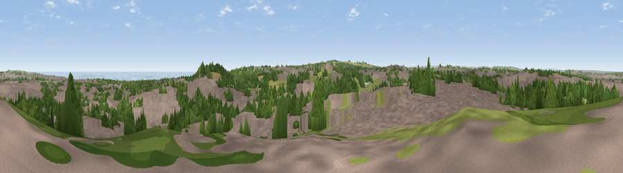

Viewpoint near Sunderland
#15731 in England · top 30% of its area beats it · near SunderlandThe view, rendered

A 360° render of this exact spot computed from the terrain model, tree cover and land cover — summer colours, afternoon light, calibrated against photographs of famous viewpoints. Real trees, hedges and buildings will differ in detail.
The panorama
Grey silhouette: terrain skyline in each direction (720 bearings, Earth curvature and refraction included). Dashed green: skyline with trees (+15 m) and buildings (+8 m) as obstacles. Blue strip: how far the ground is visible on each bearing.
Where the view opens
Wedge length = distance to the farthest visible ground on that bearing (vegetation-aware). Rings at 10, 25 and 50 km.
What fills the view
52% built-up · 25% woodland · 17% grassland · 3% water · 2% cropland
Angular shares of the visible panorama (visual magnitude), not map area. Landscape diversity 0.52 (0–1 Shannon).
Key numbers
More beautiful places nearby
The staircase of upgrades: each row has a higher view potential than everything closer. Driving times are estimates from straight-line distance, calibrated against real road routing — check an actual route before setting out.
| Place | Direction | Drive | Score |
|---|---|---|---|
| Tunstall Hills | ESE · 1 km | ~4 min | 74.2 |
| Viewpoint near Houghton-le-Spring | S · 5 km | ~10 min | 76.0 |
| Viewpoint near Sunniside | W · 16 km | ~28 min | 77.6 |
| Pontop Pike | W · 23 km | ~38 min | 77.8 |
| Viewpoint near Lazenby | SSE · 41 km | ~61 min | 86.4 |
| Warsett Hill | SE · 46 km | ~66 min | 86.8 |
| Viewpoint near Easington | SE · 50 km | ~72 min | 90.2 |
| The Knoll | S · 475 km | ~439 min | 91.0 |
54.89033, -1.40873 · source: screening · position refined by local search. Computed location — check access rights before visiting.